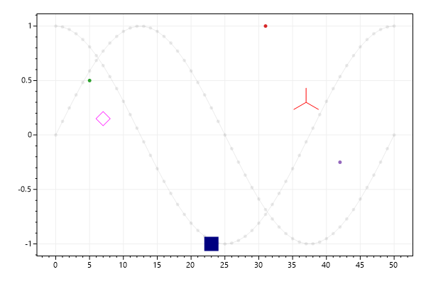

ScottPlot Cookbook: Plottable - Point
⚠️ Documentation is version-specific: This page was generated forScottPlot 4.1.4-beta
Additional documentation and more version-specific cookbooks are on the ScottPlot Website
Point
You can add a single point to the plot. A point is really a scatter plot with a single X/Y coordinate.var plt = new ScottPlot.Plot(600, 400);
// add sample data
Color clearGray = Color.FromArgb(20, Color.Black);
plt.AddSignal(DataGen.Sin(51), color: clearGray);
plt.AddSignal(DataGen.Cos(51), color: clearGray);
// add a few points around the plot
plt.AddPoint(5, .5);
plt.AddPoint(31, 1);
plt.AddPoint(42, -.25);
// add points using optional arguments for customization
plt.AddPoint(7, .15, Color.Magenta, size: 20, shape: MarkerShape.openDiamond);
plt.AddPoint(23, -1, Color.Navy, size: 20, shape: MarkerShape.filledSquare);
plt.AddPoint(37, .3, Color.Red, size: 20, shape: MarkerShape.triUp);
plt.SaveFig("point_quickstart.png");
